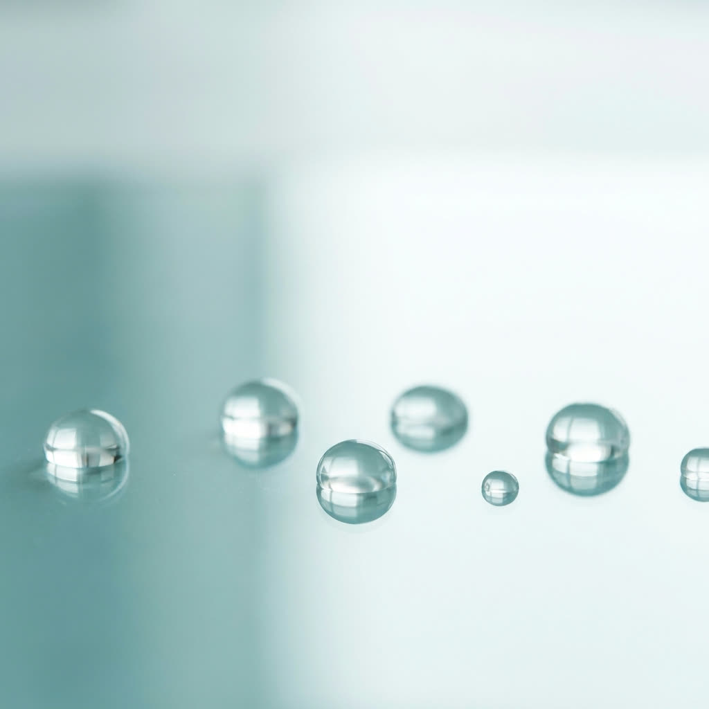
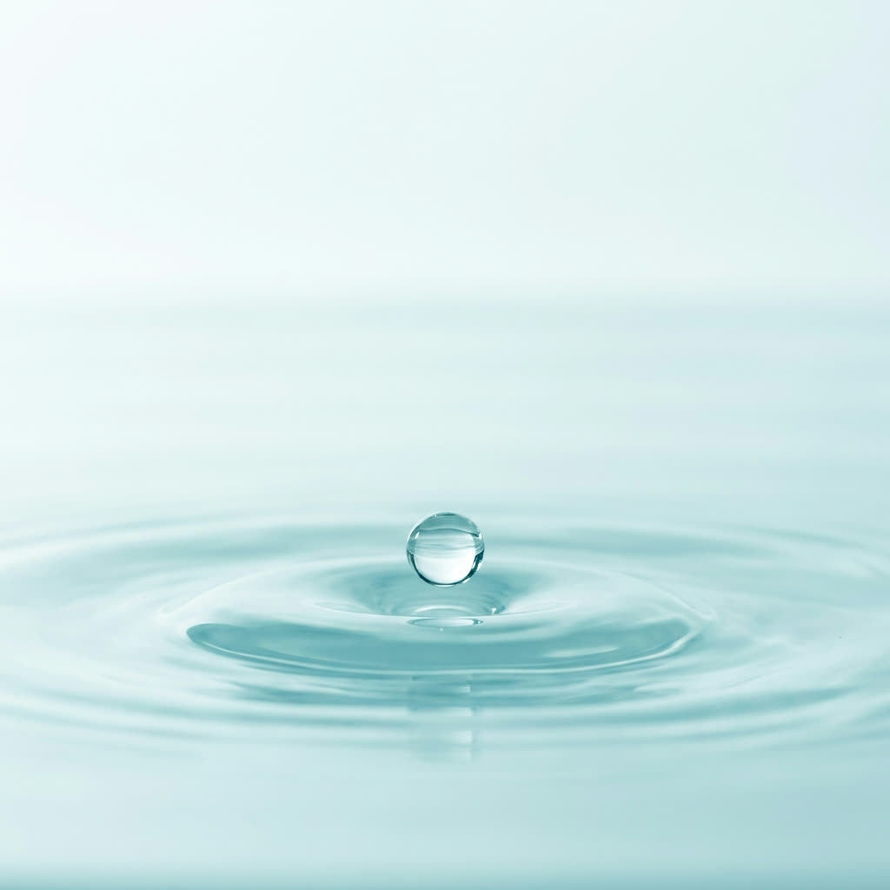

Home · Diensten · Glasbewassing
Glasbewassing
Streeploos, helder glas, binnen én buiten. Onze specialiteit. Van etalages en kantoorpuien tot woningen, met een strak en glashelder resultaat.
Streeploos, helder glas, binnen én buiten. Onze specialiteit. Van etalages en kantoorpuien tot woningen, met een strak en glashelder resultaat.


Schoon glas geeft meer licht, een betere uitstraling en een professionele eerste indruk. Met vakmanschap, de beste wissers en zuiver osmosewater laten wij uw ramen streeploos stralen, binnen en buiten.
Van woningen en etalages tot grote kantoorpuien: wij hebben de techniek en het materieel om elk raam helder te krijgen, op elke hoogte.
Met zuiver water en de juiste techniek drogen ramen vanzelf vlekvrij op. Dat is het verschil tussen schoon en écht schoon.

Zuiver osmosewater en vakmanschap zorgen voor vlekvrij glas.
Van begane grond tot hoge puien, wij hebben het juiste materieel.
In een abonnement houden we uw glas het hele jaar door helder.
Veilig en verzekerd werken, met respect voor uw pand.
We bekijken het aantal ramen, de hoogte en de gewenste frequentie.
Scherpe prijs per beurt of in een voordelig abonnement.
Streeploos resultaat met osmosewater en professionele wissers.
In een abonnement komen we automatisch terug op vaste momenten.


"Snelle offerte, nette afspraken en écht streeploos glas. Onze etalage straalt weer. Een absolute aanrader."
Vraag een gratis en vrijblijvende offerte aan voor uw glasbewassing, eenmalig of in abonnement.